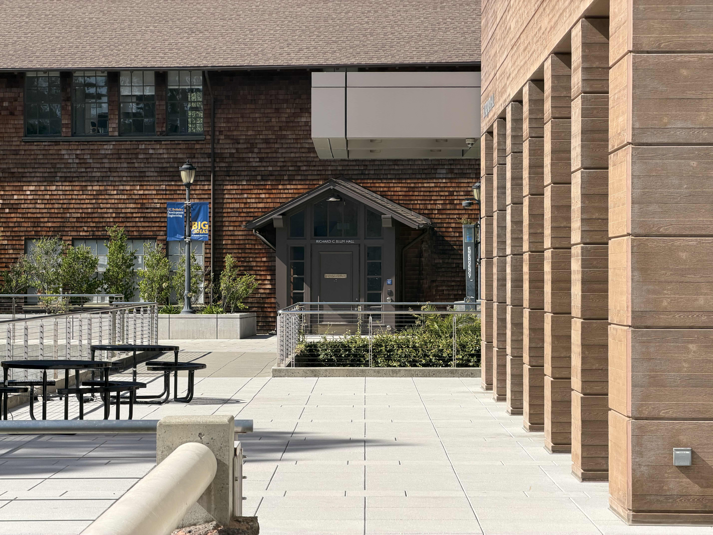
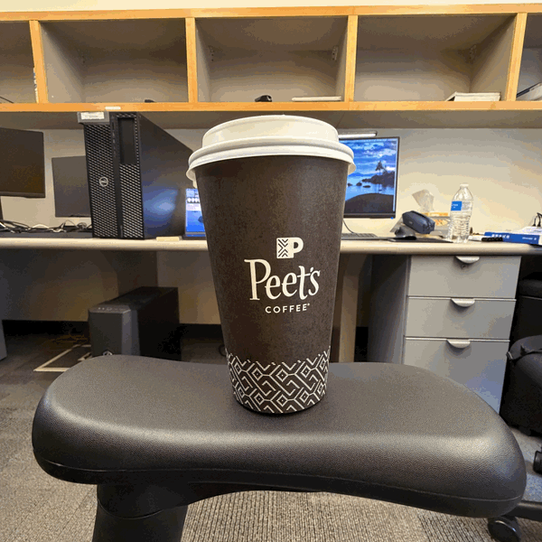

Project 0
Become Friends with Your Camera
Wenhao Ruan · Fall 2026
Part 1: Selfie: The Wrong Way vs. The Right Way
Figure 1a: 16mm, Close Distance
Figure 1b: 24mm, Middle Distance
Figure 1c: 48mm, Middle Distance
Figure 1d: 100mm, Far Distance
Compared to the 16 mm image, the portraits taken at 24 mm and 48 mm appear to be more natural and better. At 16 mm, the camera has to be placed very close to the face to fill the frame, which results in a distorted appearance of the face. As the focal length increases, the camera can be placed farther away while maintaining the same framing, which reduces distortion and creates a more natural portrait. However, when the focal length increases to 100 mm, the portrait can begin to look unnatural again. To maintain a similar framing, the camera must be positioned much farther from the face. This greater distance produces stronger perspective compression, making the face appear flatter.
Part 2: Architectural Perspective Compression

Figure 2a: Close-up shot at 24 mm

Figure 2b: Distant shot at 100 mm
In these two images, we can see that the pillars appear to have similar heights, but those in the left image look longer and more stretched, while those in the right image appear more compact. The left image was taken from a closer distance using a 24 mm focal length, whereas the right image was taken from farther away using a 100 mm focal length. Since the right one used a longer focal length, this resulted in perspective compression, making the pillars appear more compact and compressed.
Part 3: The Dolly Zoom

Figure 3: Dolly zoom, focal lengths of 14 / 19 / 28 / 35 / 48 / 75 mm
During shooting, as the focal length increased, the camera was moved backward accordingly to maintain a consistent image size of the coffee cup within the frame. As you can see, the size of the cup remains almost unchanged, while the monitor and desktop in the background are continuously zoomed in and magnified. This is a classic example of the dolly zoom effect. As the focal length increases, the field of view becomes narrower and the perspective appears more compressed, making the background objects appear closer to the subject.